96533.1.1 — Michlala Jerusalem College, 2026–2027
2026-11-10 15:41
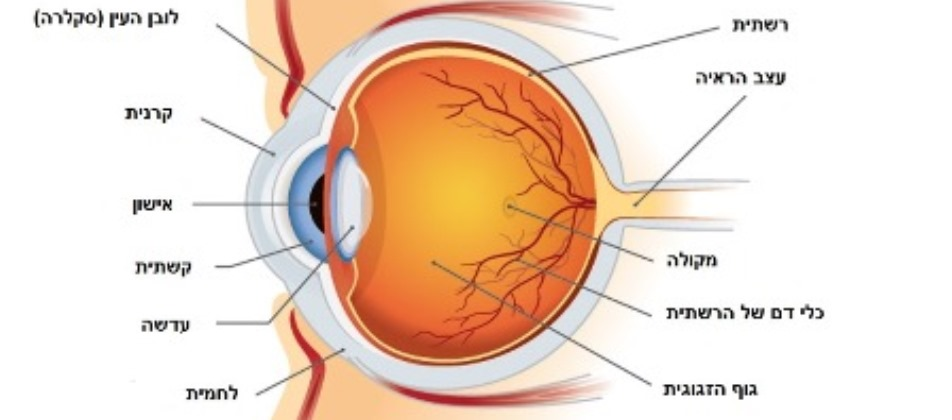
Source: Soroka Medical Center website
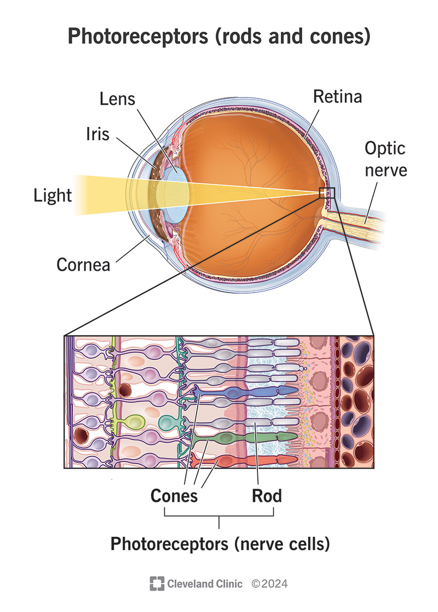
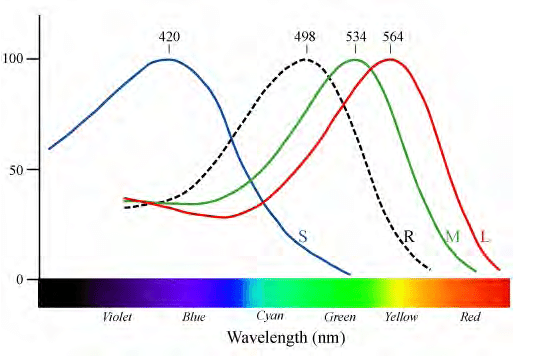
Source: researchgate.net/figure/Normalized-spectral-sensitivity-of-retinal-rod-and-cone-cells_fig7_265155524
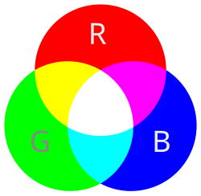
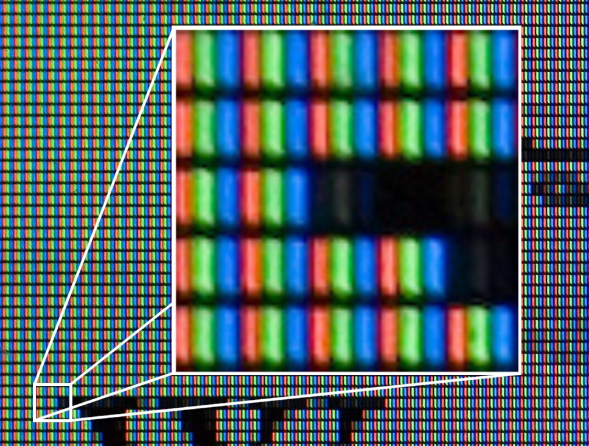
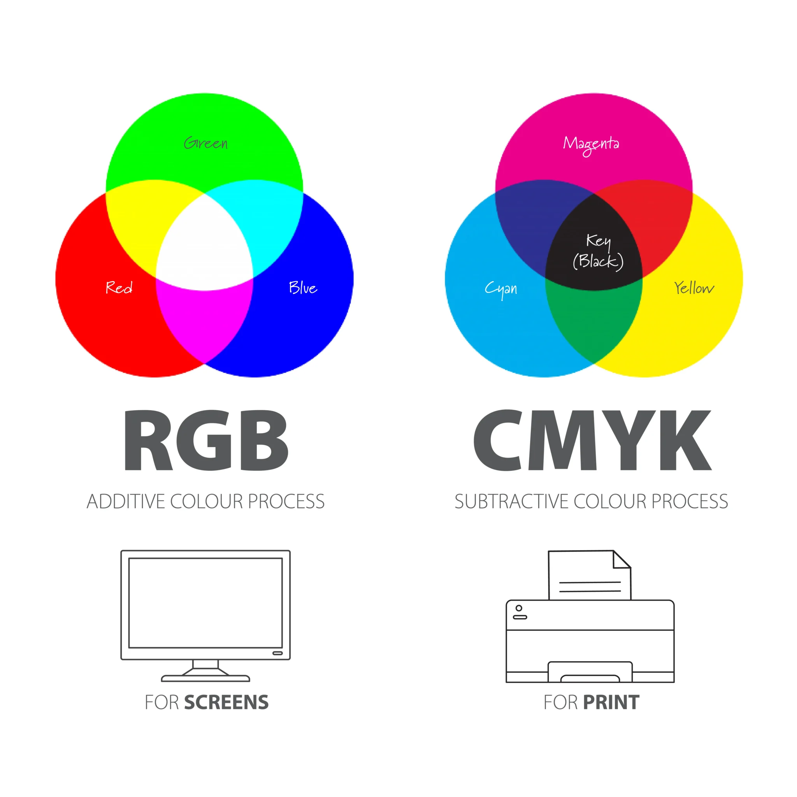
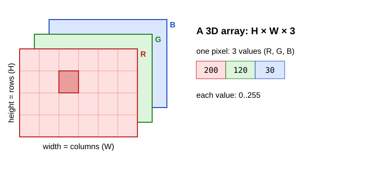
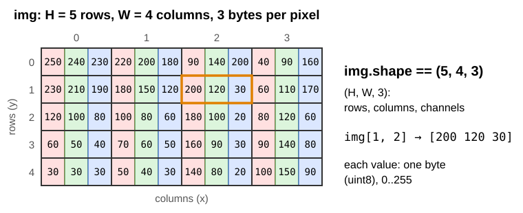
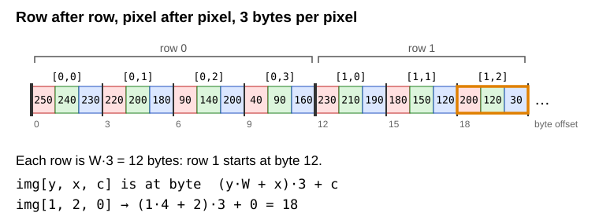
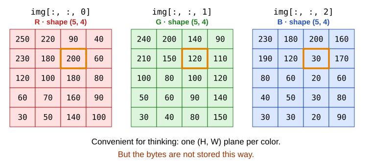
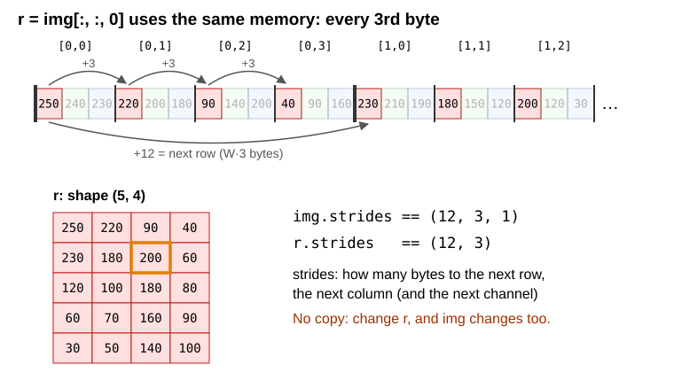
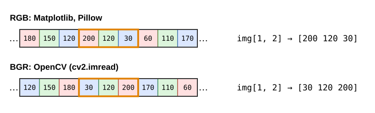
cv2.imread gives B, G, R: img[:, :, 0] is the blue channel.cv2.cvtColor(img, cv2.COLOR_BGR2RGB).shape == (H, W, 3) — rows, columns, channels.shape == (H, W) — one plane.img[row, col] — that is img[y, x], not img[x, y].0 .. 255.00000000 = 0, 11111111 = 255.11111111 + 1 = 1 00000000 → the 9th bit does not fit → 0
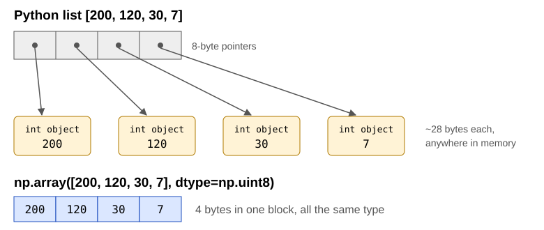
Brighten a 300 × 400 color image (360,000 values):
| time | |
|---|---|
| Python loop | ~100 ms |
| NumPy | ~1 ms |
code/loop_vs_numpy.py.dtype| dtype | bytes | range |
|---|---|---|
np.uint8 |
1 | 0 .. 255 |
np.int16 |
2 | −32,768 .. 32,767 |
np.int32 |
4 | about ±2.1 billion |
np.float32 |
4 | ~7 significant digits |
np.float64 |
8 | ~16 significant digits |
Images are almost always uint8.
For a color image: shape == (H, W, 3), ndim == 3.
No loops: one expression works on the whole array.
max(axis=...): the axis you name disappears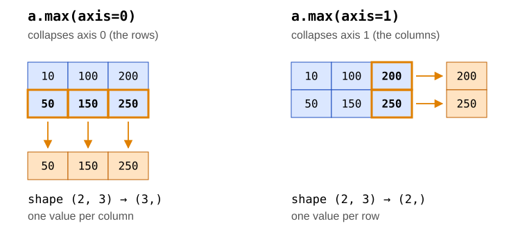
axis=0 runs down the rows → one result per column. axis=1 runs along a row → one result per row.min, sum, mean, ...axis=1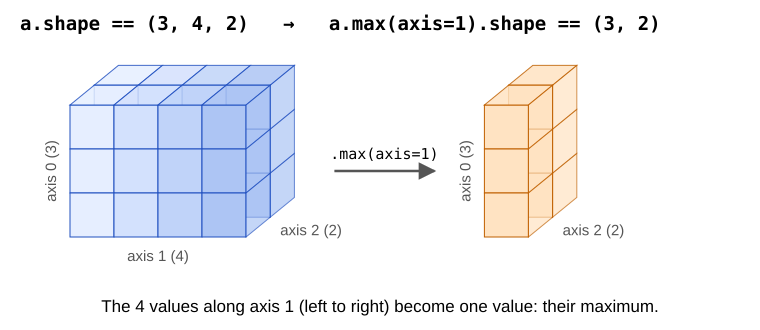
(3, 4, 2) without axis 1 → (3, 2). Rule: remove the named axis from the shape.axis=1, with numbers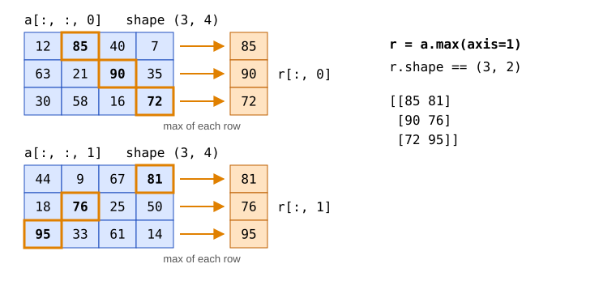
Each depth slice a[:, :, d] is a 2D plane — like a color channel img[:, :, c].
axis can be a tupleFor an image img with shape (H, W, 3):
axis=(0, 1) collapses rows and columns: all H × W values of a channel become one number.(3,), a 1D array of 3 values.img.max(axis=(0, 1)) gives the same as img.max(axis=0).max(axis=0), in one step.axis at all: every axis disappears, and the result is one number.uint8 wraps arounduint8 + int is uint8, computed modulo 256.The safe way back to an image:
np.clip — values below 0 become 0, above 255 become 255.astype — converts to another type. Without clip, out-of-range values give garbage.Exercises 1–3 in the exercises file.
cv2): written in C/C++ with a Python wrapper. Industry standard, optimized for speed. Images are NumPy arrays.sys.argvsys.argv is a list of strings: the program name, then each word typed after it.sys.argv is ['ex04.py'], and sys.argv[1] raises IndexError.python ex04.py "my photo.jpg"..py file.sys.exit(1) stops the program. A non-zero value means "something went wrong".import sys
import cv2
filename = sys.argv[1] # check len(sys.argv) first, as before
img = cv2.imread(filename)
if img is None:
print("failed to read", filename)
sys.exit(1)
print(type(img), img.dtype, img.shape)
# <class 'numpy.ndarray'> uint8 (400, 300, 3)
print(img[0, 0])
# [122 133 117] <- B, G, R !cv2.imread does not raise an error for a missing file — it returns None.cv2.imread(name, cv2.IMREAD_GRAYSCALE) → 2D array.vmin=0, vmax=255, Matplotlib stretches each gray image to its own min..max — and brightness changes become invisible.plt.savefig before plt.show(): once the window is closed, the figure is gone.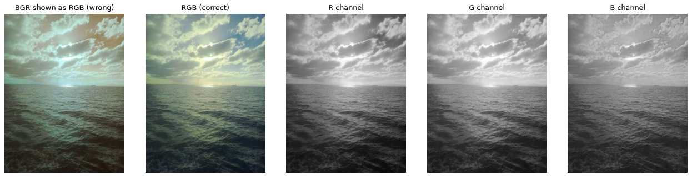
code/show_image.py
img + b.img * k.NumPy, done right:
int16? Because uint8 + 100 already wrapped around before clip could see it.code/brightness_contrast.py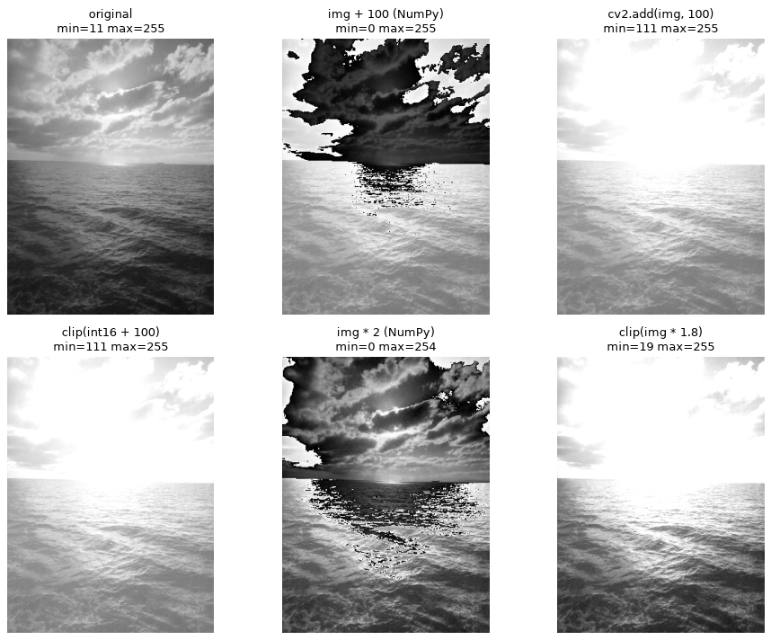
Exercises 4–6 in the exercises file.
img[10, 20] # one pixel: [B G R]
img[10, 20, 2] # one value: the R of that pixel
img[:, :, 2] # the R plane, shape (H, W)
img[100:200, 50:150] # a crop: rows 100..199, columns 50..149
img[::2, ::2] # every second row and column: half size
img[::-1, :] # rows in reverse: upside down
img[:, ::-1] # columns in reverse: mirrorstart:stop:step — like Python lists, but one per dimension.
.copy() when you need an independent array.crop = img[100:200, 50:150]
crop2 = img[100:200, 50:150].copy()
img.flags.owndata # True: img owns its memory
crop.flags.owndata # False: crop uses img's memory
crop.base is img # True: base = the array that owns the memory
crop2.base # None: a copy owns its memory
np.shares_memory(img, crop) # True
np.shares_memory(img, crop2) # Falser = img[:, :, 2] # one channel
np.shares_memory(img, r) # True: a view
r[:] = 0 # img has no red now
mask = img < 80
dark = img[mask] # the dark values, shape (n,)
np.shares_memory(img, dark) # False: a boolean mask gives a copy
dark[:] = 0 # img does not change
img[mask] = 0 # but this writes into img(400, 300, 3) * (3,) → each pixel's 3 values are multiplied by the 3 weights.img + 10 is broadcasting too: a scalar fits any shape.(400, 300) is lined up from the right: 300 against 3 → error.keepdims=True keeps the squashed axis, with size 1.The eye is most sensitive to green and least to blue:
\[Y = 0.299\,R + 0.587\,G + 0.114\,B\]
img * weights is broadcasting: (H, W, 3) * (3,) → each pixel's B, G, R times the 3 weights.axis=2 — sum over the channels; the result has one dimension less.code/loop_vs_numpy.pyExercises 7–10 in the exercises file.
The new value of a pixel depends only on its old value: out = f(img).
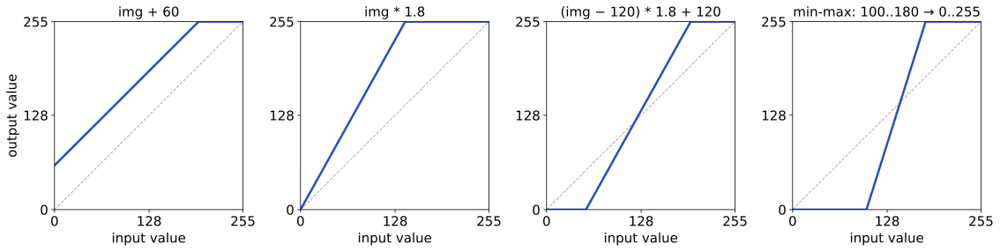
out = img (no change). Above 255 or below 0: clipped.img * 1.8 stretches around 0: the image also gets brighter (mean 123 → 221).(img - m) * 1.8 + m keeps the mean: dark gets darker, bright gets brighter.\[out = \frac{img - min}{max - min} \cdot 255\]
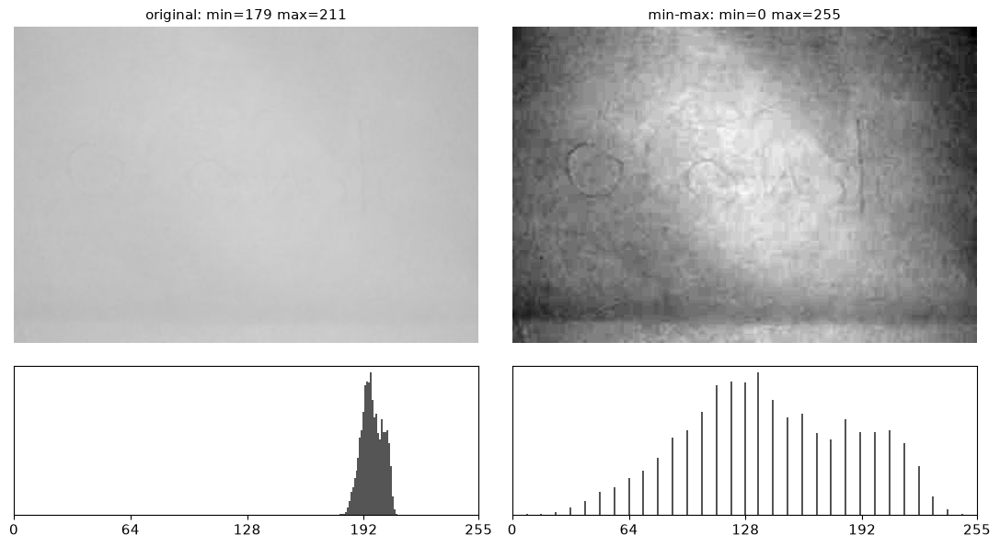
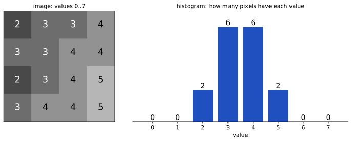
ravel() — the image as one long 1D array.int64? A count can be as large as the number of pixels: uint8 stops at 255, int16 at 32,767.np.uint8, np.int64), and converted back when written: slow.ints: no conversions.np.bincount, next).np.bincounthist, where hist[v] = the number of pixels with value v.minlength=256 — without it, the result stops at the largest value (5 above).float image raises TypeError.np.histogramfloat images) and with wider bins.ravel() needed: it flattens the image by itself.cv2.calcHist[0] — the channel; for a color image [2] is R (B, G, R!).None counts all pixels; a uint8 mask counts only where it is not 0.float32, not integers.For a color image: one histogram per channel, img[:, :, c].
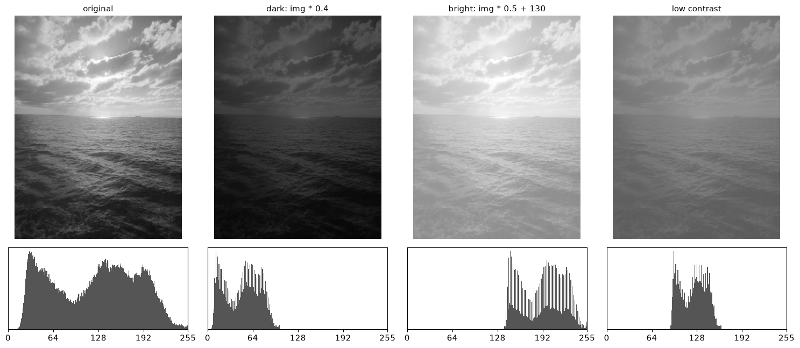
The 4 × 4 image from before, values 0..7:
| value | 0 | 1 | 2 | 3 | 4 | 5 | 6 | 7 |
|---|---|---|---|---|---|---|---|---|
hist |
0 | 0 | 2 | 6 | 6 | 2 | 0 | 0 |
cdf |
0 | 0 | 2 | 8 | 14 | 16 | 16 | 16 |
| new value | 0 | 0 | 0 | 3 | 6 | 7 | 7 | 7 |
cdf[v] = how many pixels have a value ≤ v: hist.cumsum().cdf − 2) / (16 − 2)). 2 is the first non-zero cdf, 16 the number of pixels.hist = np.bincount(img.ravel(), minlength=256)
cdf = hist.cumsum()
cdf_min = cdf[cdf > 0].min() # the first non-zero value
lut = np.round(255 * (cdf - cdf_min) / (cdf[-1] - cdf_min))
lut = np.clip(lut, 0, 255).astype(np.uint8)
eq = lut[img] # each pixel: lut[its value]
eq_cv = cv2.equalizeHist(img) # OpenCV: exactly the samecdf[-1] — the last value of the CDF: the number of pixels.lut[img] — an array as an index: each value in img picks its new value from lut (a lookup table).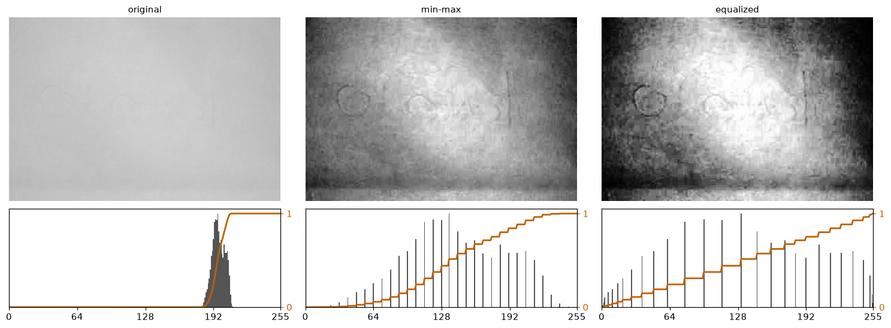
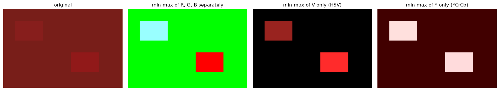
max(R, G, B).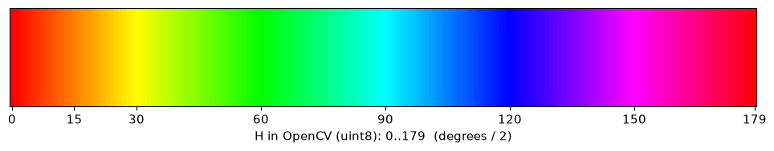
uint8, H is 0..179 (degrees / 2): 360 does not fit in a byte. S and V are 0..255.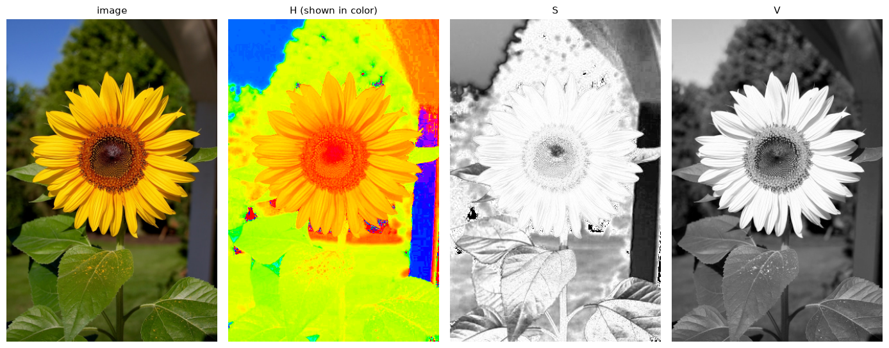
0.299 R + 0.587 G + 0.114 B.hsv = cv2.cvtColor(img, cv2.COLOR_BGR2HSV)
h, s, v = hsv[:, :, 0], hsv[:, :, 1], hsv[:, :, 2]
mask = (h >= 15) & (h <= 35) & (s >= 100) & (v >= 100) # yellow
gray = cv2.cvtColor(img, cv2.COLOR_BGR2GRAY)
out = cv2.cvtColor(gray, cv2.COLOR_GRAY2BGR) # gray, but 3 channels
out[mask] = img[mask] # color only in the mask& — "and", element by element. The parentheses are required.(h <= 10) | (h >= 170).cv2.inRange(hsv, (15, 100, 100), (35, 255, 255)) — the same mask, as 0 / 255.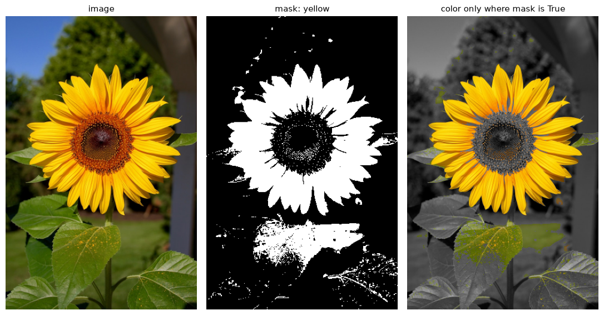
r, column c is the point (x, y) = (c, r).(0, 0) is the top-left pixel.img[y, x] — row first. Matrices and OpenCV: (x, y).\[ \begin{bmatrix} a & b \\ c & d \end{bmatrix} \begin{bmatrix} x \\ y \end{bmatrix} = \begin{bmatrix} a x + b y \\ c x + d y \end{bmatrix} \]
\[ S = \begin{bmatrix} s_x & 0 \\ 0 & s_y \end{bmatrix} \qquad R(\theta) = \begin{bmatrix} \cos\theta & -\sin\theta \\ \sin\theta & \cos\theta \end{bmatrix} \]
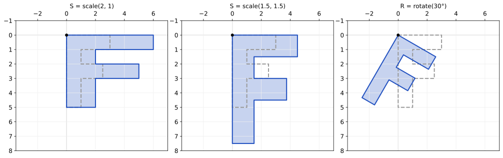
R(θ) with θ > 0 turns counter-clockwise.cv2.getRotationMatrix2D(center, angle, scale): angle > 0 is counter-clockwise on the screen — it uses R(−angle).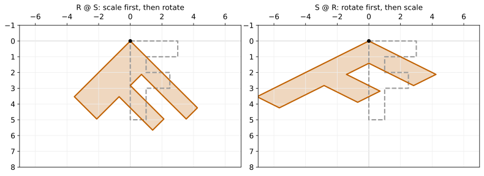
R @ S @ p: first S, then R — the matrix next to the point acts first.R @ S and S @ R are different transformations.(x, y) → (x + tx, y + ty).(0, 0) to (0, 0), so it cannot translate.(x, y) → (x, y, 1).\[ T = \begin{bmatrix} 1 & 0 & t_x \\ 0 & 1 & t_y \\ 0 & 0 & 1 \end{bmatrix} \qquad T \begin{bmatrix} x \\ y \\ 1 \end{bmatrix} = \begin{bmatrix} x + t_x \\ y + t_y \\ 1 \end{bmatrix} \qquad R = \begin{bmatrix} \cos\theta & -\sin\theta & 0 \\ \sin\theta & \cos\theta & 0 \\ 0 & 0 & 1 \end{bmatrix} \]
M = T @ R @ S.[0, 0, 1]. OpenCV uses only the top 2 rows: a 2×3 matrix, M[:2].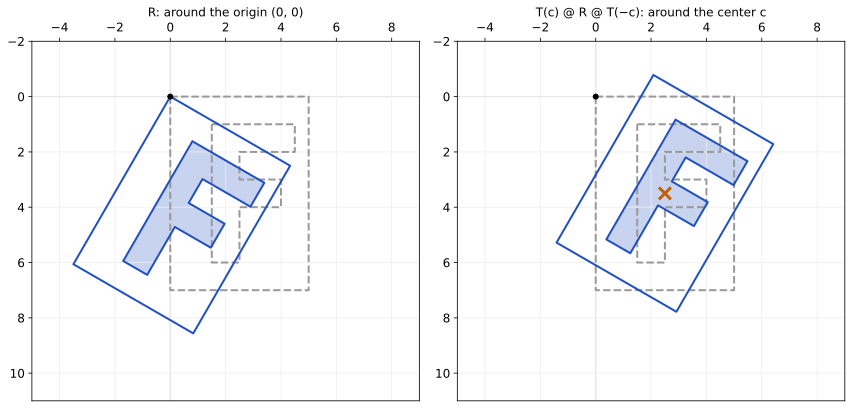
R alone rotates around (0, 0) — the top-left corner.c: move c to the origin, rotate, move back — T(c) @ R @ T(−c).code/warp.py, function rotation_about_center.
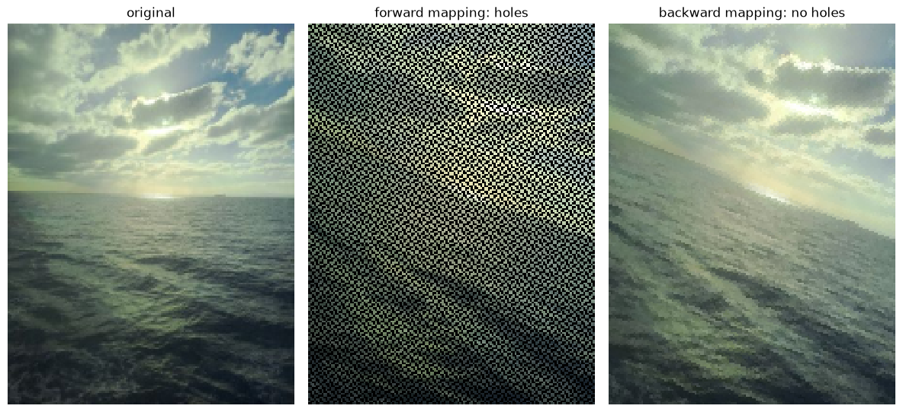
(x, y): where did it come from? (sx, sy, 1) = M⁻¹ (x, y, 1) — the inverse matrix.(sx, sy) is usually not a whole number → interpolation.(sx, sy) is outside the source image: black.round — nearest neighbor: the value of the closest pixel.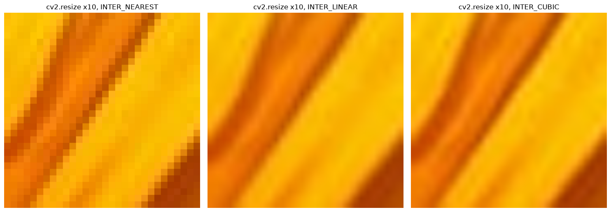
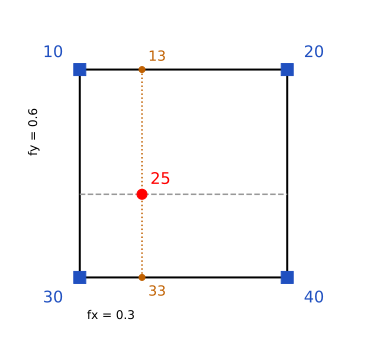
fx, fy — the fractional parts of sx, sy.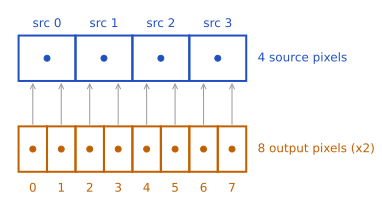
src = (dst + 0.5) / 2 − 0.5.cv2.resize: [0 100 200 250] → [0 25 75 125 175 212.5 237.5 250]src = dst / 2: [0 50 100 150 200 225 250 250] — half a pixel off.cv2.warpAffine, INTER_NEAREST. With 0.5: INTER_NEAREST_EXACT.ys, xs = np.indices((h, w)) # y, x of every output pixel
coords = np.stack([xs.ravel(), ys.ravel(), np.ones(h * w)]) # (3, h*w)
sx, sy, _ = np.linalg.inv(M) @ coords # all pixels in one product
c = np.round(sx).astype(int).reshape(h, w)
r = np.round(sy).astype(int).reshape(h, w)
inside = (r >= 0) & (r < h) & (c >= 0) & (c < w)
out = np.zeros_like(img)
out[inside] = img[r[inside], c[inside]] # all pixels at oncenp.indices((2, 3)) → y: [[0 0 0] [1 1 1]], x: [[0 1 2] [0 1 2]].img[r, c] with arrays r, c: one pixel for each pair (r[i], c[i]).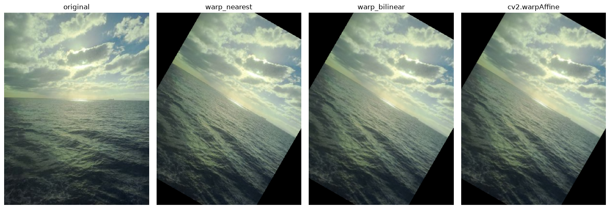
code/warp.py) and cv2.warpAffine differ by at most 1–2 inside the image.M = cv2.getRotationMatrix2D((cx, cy), 30, 1.0) # 2x3
out = cv2.warpAffine(img, M, (w, h)) # bilinear
out = cv2.warpAffine(img, M, (w, h), flags=cv2.INTER_NEAREST)
small = cv2.resize(img, None, fx=0.5, fy=0.5, interpolation=cv2.INTER_AREA)
big = cv2.resize(img, (2 * w, 2 * h), interpolation=cv2.INTER_CUBIC)img.shape.INTER_AREA averages the pixels; nearest and bilinear skip pixels.Rotating a 400 × 300 color image (code/warp.py):
| time | |
|---|---|
| Python loop, nearest | ~1000 ms |
| NumPy, nearest | ~10 ms |
| NumPy, bilinear | ~45 ms |
cv2.warpAffine, bilinear |
~0.3 ms |
Digital Image Processing · updated 2026-11-10 15:41